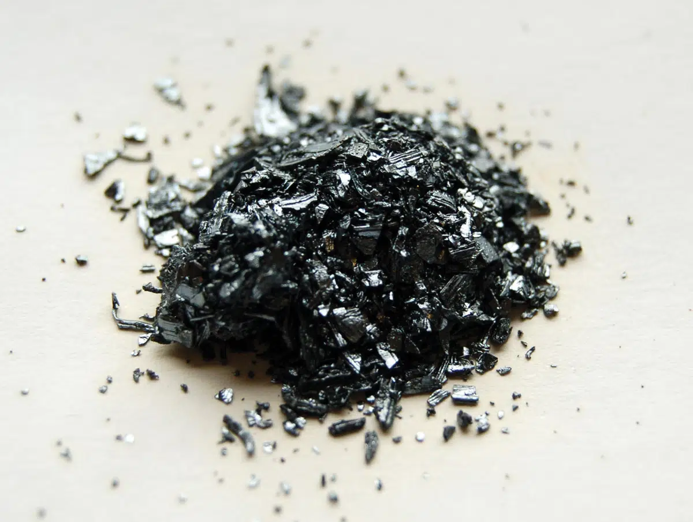

Iodo: O que é, de onde vem e quando surgiu?
O elemento que nasceu de um acidente numa fábrica de pólvora e ganhou o nome de uma cor.
O iodo (símbolo I, número atômico 53) é um sólido cinza-escuro, quase preto, com um brilho meio metálico. Ele faz parte da família dos halogênios, no grupo 17 da tabela periódica, e tem massa atômica de aproximadamente 126,9 u.

Fonte: https://conhecimentocientifico.r7.com/iodo-elemento-quimico/
Acessado em 28 Set. 2026
O que mais chama atenção nele é o comportamento quando esquenta: em vez de derreter e virar líquido, ele sublima, ou seja, passa direto do estado sólido para o gasoso, soltando um vapor roxo bem forte. Ele derrete por volta de 113,7 °C e ferve perto de 184 °C. Também é pouco solúvel em água, mas se dissolve bem em álcool e outros solventes orgânicos.
Fonte: https://aprofundandobiologia.blogspot.com/2015/03/aula-pratica-sobre-sublimacao-do-iodo.html
Acessado em 28 Set. 2026
Uma descoberta por acidente
A história começa em 1811, na França, com o químico Bernard Courtois. O trabalho dele era fabricar salitre (nitrato de potássio) para abastecer o exército de Napoleão, e para isso ele usava cinzas de algas marinhas.
Um dia, Courtois colocou ácido sulfúrico demais na mistura, sem querer. Subiu um vapor roxo bem forte que, ao esfriar, virou cristais escuros e brilhantes. Ele desconfiou que tinha achado um elemento novo, mas não tinha certeza, e por isso passou amostras para outros cientistas conferirem, entre eles o francês Joseph Gay-Lussac e o inglês Humphry Davy. Os dois confirmaram: era mesmo um elemento novo.
Em 1813, ele foi batizado de "iodo", nome que vem do grego iodes, que significa "cor violeta". Ou seja, o elemento ganhou o nome da fumaça que entregou a descoberta.
Onde o iodo é encontrado
Como os outros halogênios, o iodo não aparece livre na natureza. Ele está sempre combinado com outros elementos, principalmente na forma de iodetos e iodatos. A água do mar contém iodeto de sódio (NaI), ainda que em pequena quantidade, e as algas marinhas acumulam bastante iodo, sendo uma das fontes mais ricas. Também há iodato de sódio (NaIO3) e minerais como a lautarita nos depósitos de salitre do Chile, também chamado de caliche, e o país é hoje o maior produtor mundial de iodo. Ele ainda aparece em compostos petrolíferos, na forma de iodeto de potássio (KI).
O iodo no dia a dia
O uso mais conhecido está na cozinha: no Brasil, a lei obriga a adição de iodo ao sal comum. O corpo precisa dele para a tireoide funcionar direito, e sem essa suplementação boa parte da população desenvolveria bócio, o aumento da tireoide, por falta de iodo na dieta.
Na saúde, a tintura de iodo (iodo com iodeto de potássio em álcool) é usada como antisséptico para desinfetar a pele e ferimentos. Os isótopos radioativos iodo-131 e iodo-123 também servem na medicina nuclear para diagnosticar e tratar doenças da tireoide, inclusive o câncer.
O elemento ainda está dentro das lâmpadas halógenas, onde funciona como um gás que aumenta a vida útil do filamento de tungstênio. Já o iodeto de prata (AgI) é usado em filmes fotográficos antigos e para "semear nuvens", técnica que ajuda a provocar chuva artificial.
Importância e riscos
O iodo é essencial para o corpo humano, porque entra na composição dos hormônios da tireoide (tiroxina e tri-iodotironina), que regulam o metabolismo do corpo todo. A falta dele causa hipotireoidismo e bócio e, em crianças, a deficiência pode até atrapalhar o desenvolvimento físico e mental.
Por outro lado, o excesso também faz mal e pode causar efeitos parecidos com os da falta. Em quantidades bem altas, na faixa de 2 a 3 gramas do elemento puro, ele pode até ser fatal se ingerido. O iodo radioativo, como o iodo-131, é perigoso porque emite radiação ionizante, que pode se acumular na tireoide e causar câncer, mesmo sendo usado com cuidado em tratamentos médicos. Em laboratório, os vapores de iodo irritam bastante os olhos e as vias respiratórias, então ele deve ser manuseado com cuidado, de preferência com boa ventilação.